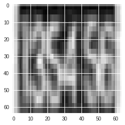

Ozan Pekmezci May 18th, 2018
The aim of this project at hand is to build a software to detect house numbers on streets. The project was featured in the Deep Learning course of Udacity.
The domain is number recognition on videos. The app recognizes the numbers on the live image and shows it to the user. This project used Google's paper as a reference point. The paper explains Google's way to recognize multi-digit numbers from static Street View images using Deep Convolutional Neural Networks. This project also does the same using a different architecture. The best part of this project is the combination of Machine Learning with Software Engineering which are the field of interests of the author.
The project was split into three steps. The first being the digit recognition using synthetic dataset. Second one was using doing the same with real street number data and third the Android app implementation, which was optional on Udacity Deep Learning course. For the first step, MNIST dataset was used. MNIST is database that contains handwritten digits. Therefore, they are actually not the best to detect multi-digit street numbers. That's why the digits from MNIST were concatenated to simulate house numbers on streets. The second step uses SVHN dataset, which contains house numbers images acquired from Google Street View. Lastly, third step also was supposed to SVHN dataset, but it didn't came to life during the scope of this capstone due to the reason that Tensorflow Apps never ran on my phone.
The problem is the fact that house numbers have different formats. The numbers can appear with non-standard baseline, broken outlines, non-standard fonts or bad localization. The goal was recognizing all of those cases.
The strategy to solve this problem is using Convolutional Neural Networks with Tensorflow framework. The end solution runs on Android operating system to increase portability. MNIST and SVHN datasets are used to train and test data. The algorithm receives images as an input and extracts digits from them if there are any.
The metrics are coverage, overall accuracy and per character accuracy. In the first phase of the project, we achieved 91.77% overall accuracy and 98.24% per character accuracy. For coverage, we define a confidance threshold and discard the predictions that are less likelier than the threshold. Coverage is the proportion of non-discarded values to all values.
The main dataset to be used for this type of a problem is the SVHN dataset, which contains Google Street View House Numbers data, however the author chose MNIST database for the beginning. The reason is simple, MNIST database provides handwritten numbers and SVHN contains sequence of digits. That's why the initial idea was concatenating MNIST characters to form an artificial dataset so that we can avoid problematic situtations that occur on house numbers like digits being upside-down, containing some lines inbetween or written in another artistic way.
According to its official website, MNIST dataset contains 60,000 training and 10,000 testing examples. All digits are normalized centered in a fixed-size image, which makes it a good choice for machine learning since it handles pre-processing steps for you. Another reason to use MNIST initially is the fact that, it is easy to import via Keras. Keras is a machine learning frontend that serves as an abstraction layer to run different machine learning backends like Tensorflow. It also is really easy to import MNIST with the line:
from keras.datasets import mnist
.After that, The dataset is minimal and has the size of 11 Megabytes. Each of the images are basically 28 by 28 pixels. Although they preserve color values, the software at hand transforms the images to black and white and uses them like that. This creates no problems, since different colors don't change the ability to recognize different digits on the images.
Example data point from MNIST:
For the second stage of the capstone, a synthetic MNIST dataset is generated. Since 99.99% of the SVHN dataset contains house number length less than 5, the maximum length of the synthetic dataset set to be 5. This means that MNIST data points are stitched together to become data points with the length between 1 and 5. To do that, the blank character is utilized with the label 10. For example, this example has the label (7, 3, 1, 1 3).
Example from multi-digit MNIST:

The SVHN dataset on the other hand, is much bigger, has the size more than 200 megabytes. It contains 73257 training and 26032 testing examples. Those examples are directly extracted from Google Maps Street View, that's why all data are found in their real environment. By default, there are 10 classes, 1 for each digit. Digit '1' has label 1, '9' has label 9 and '0' has label 10. However, in our case, digit '0' has the label 0 and label 10 corresponds to the blank character. That's why a preprocessing is required. SVHN dataset comes in two different formats; format 1 contains original images with bounding boxes around characters. Format 2 has MNIST-like 32-by-32 images centered around a single character, which we used so that we can use similar model architectures for different versions. The original character bounding boxes are extended in the appropriate dimension to become square windows, so that resizing them to 32-by-32 pixels does not introduce aspect ratio distortions. However, getting and importing is as not easy as importing MNIST data since the dataset is provided in .mat format. The dataset should be downloaded and the data should be extracted from the dataset programatically.
Example data from SVHN:


MNIST dataset contains examples of each digits in a fairly balanced way. The label 1 seems more than others and label 5 seems to be a bit less than others.

Generated MNIST dataset contains digits with the maximum length of 5. Since they were set randomly, the distribution stayed the same as on single digit MNIST.

SVHN dataset looks like left-skewed bell curve that has the most examples of the label 1. The occurances of labels gets less and less starting from the label 2. Labels 0 and 9 seems to be the lowest for house numbers.
For the problem at hand, the author used Convolutional Neural Networks to predict digits from the images. Convolutional Neural Networks are ideal for image recognition, since they don't flatten the nodes, which removes the logic out of images.
Another software that the author would normally use was developing an Android application but there were compilation problems that couldn't be fixed for months, which moved that part to the backlog, which will be developed after this nanodegree ends.
As benchmark we use the model that is specified in Google's paper. Image as input, hidden layers and an output layer that contains nodes that represent a digit each. The paper also mentions benchmark values for accuracy.
These benchmark values are coverage, overall accuracy and per character accuracy. The authors of the paper achieved 96.5% coverage, 96% overall accuracy and 97.8% per character accuracy. For coverage, we define a confidance threshold and discard the predictions that are less likelier than the threshold. Coverage is the proportion of non-discarded values to all values.
The model that was developed during the scope of this project, achieved the overall accuracy of 87.2% and per character accuracy of 96.8%. When the confidence threshold 70% was chosen, the coverage was 96.5%. However, the confidence threshold being 100% resulted the coverage being 46.7%. Therefore, algorithm is only 100% sure about the results of half of the data.
grey: epoch: 12: 44.5, 24: 48, 48: 49.2, batch: 32: 86 - 52 adam, learningrate 0.001, 6 conv layers, batchnorm: 25%
Data preprocessing is different for different steps of the project. For the first step, which is using MNIST for single digit recognition, the data is reshaped based on the image data format of the Keras instance, images are turned into gray to reduce complexity, then the RGB values values are normalised to be in the range 0 to 1 that is always beneficial for machine learning algorithms. Lastly, the labels are one-hot-encoded from class vector to binary class matrices, which again is required for machine learning algorithms to function well.
The second step is generating synthetic MNIST data and building image recognition model up to 5 consecutive digits. There, the author did what he did on the first step, plus a synthetic dataset is built. To do that, first a random length for each data is selected. Then, random indices are selected for each element. Next, the images and labels are stitched together to resemble actual data points and images. Lastly, blank images and their labels 10 are added to the required locations followed by resizing the resulting images to their right size, which is 64 to 64.
Last step was doing the same with the SVHN dataset. However, SVHN dataset is much harder to import than MNIST. That's why it needs more steps. First, the dataset gets downloaded, unpacked and extracted. We use h5py to import the .mat files, so that we can reach file contents for each digit, like the position of the boxes around digits, label and the file name. After that, we use the the information about the box to crop the parts outside to remove irrelevant sections of the images. Then the concrete training and testing data points are acquired. There are 33402 data points, labels in the training set and 13068 in the training set. Only one of them in training set has the digit length more than 5.
 Removed element of SVHN dataset that
In this section, all of your preprocessing steps will need to be clearly documented, if any were necessary. From the previous section, any of the abnormalities or characteristics that you identified about the dataset will be addressed and corrected here. Questions to ask yourself when writing this section:
In this section, the process for which metrics, algorithms, and techniques that you implemented for the given data will need to be clearly documented. It should be abundantly clear how the implementation was carried out, and discussion should be made regarding any complications that occurred during this process. Questions to ask yourself when writing this section:
In this section, you will need to discuss the process of improvement you made upon the algorithms and techniques you used in your implementation. For example, adjusting parameters for certain models to acquire improved solutions would fall under the refinement category. Your initial and final solutions should be reported, as well as any significant intermediate results as necessary. Questions to ask yourself when writing this section:
In this section, the final model and any supporting qualities should be evaluated in detail. It should be clear how the final model was derived and why this model was chosen. In addition, some type of analysis should be used to validate the robustness of this model and its solution, such as manipulating the input data or environment to see how the model’s solution is affected (this is called sensitivity analysis). Questions to ask yourself when writing this section:
In this section, your model’s final solution and its results should be compared to the benchmark you established earlier in the project using some type of statistical analysis. You should also justify whether these results and the solution are significant enough to have solved the problem posed in the project. Questions to ask yourself when writing this section:
In this section, you will need to provide some form of visualization that emphasizes an important quality about the project. It is much more free-form, but should reasonably support a significant result or characteristic about the problem that you want to discuss. Questions to ask yourself when writing this section:
In this section, you will summarize the entire end-to-end problem solution and discuss one or two particular aspects of the project you found interesting or difficult. You are expected to reflect on the project as a whole to show that you have a firm understanding of the entire process employed in your work. Questions to ask yourself when writing this section:
In this section, you will need to provide discussion as to how one aspect of the implementation you designed could be improved. As an example, consider ways your implementation can be made more general, and what would need to be modified. You do not need to make this improvement, but the potential solutions resulting from these changes are considered and compared/contrasted to your current solution. Questions to ask yourself when writing this section:
Before submitting, ask yourself. . .